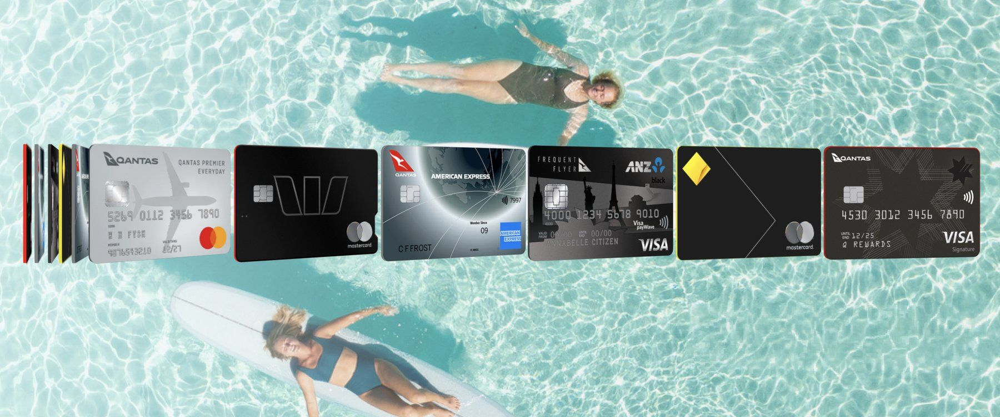
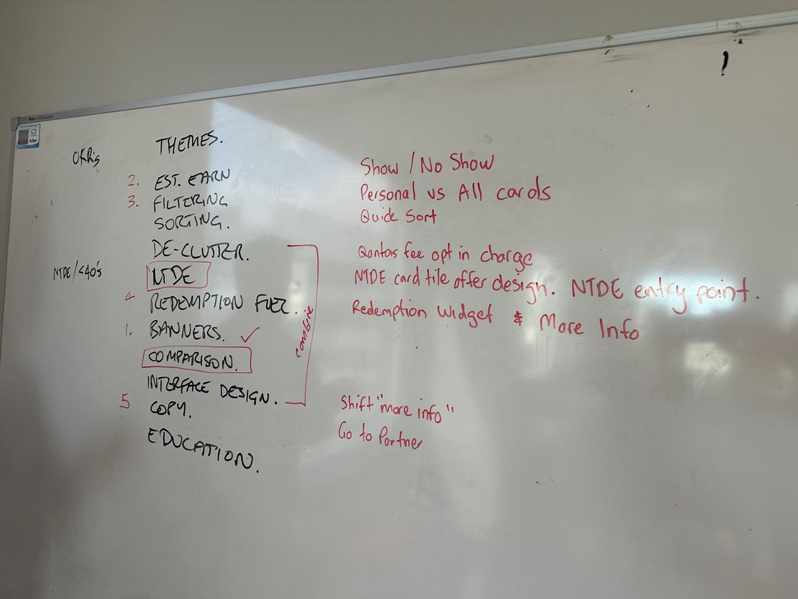
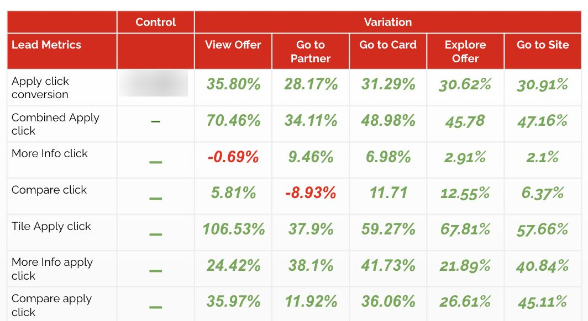
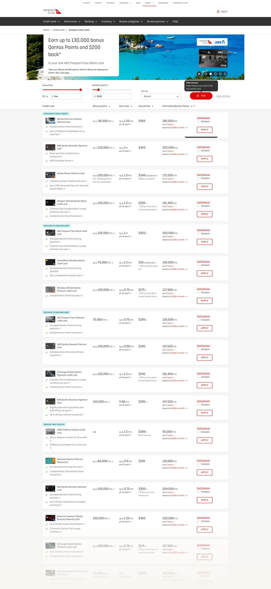
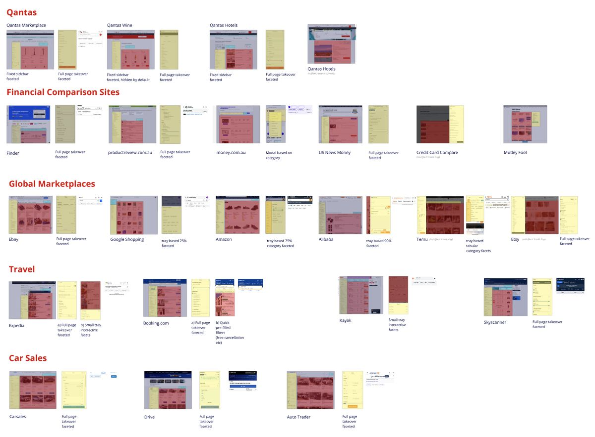
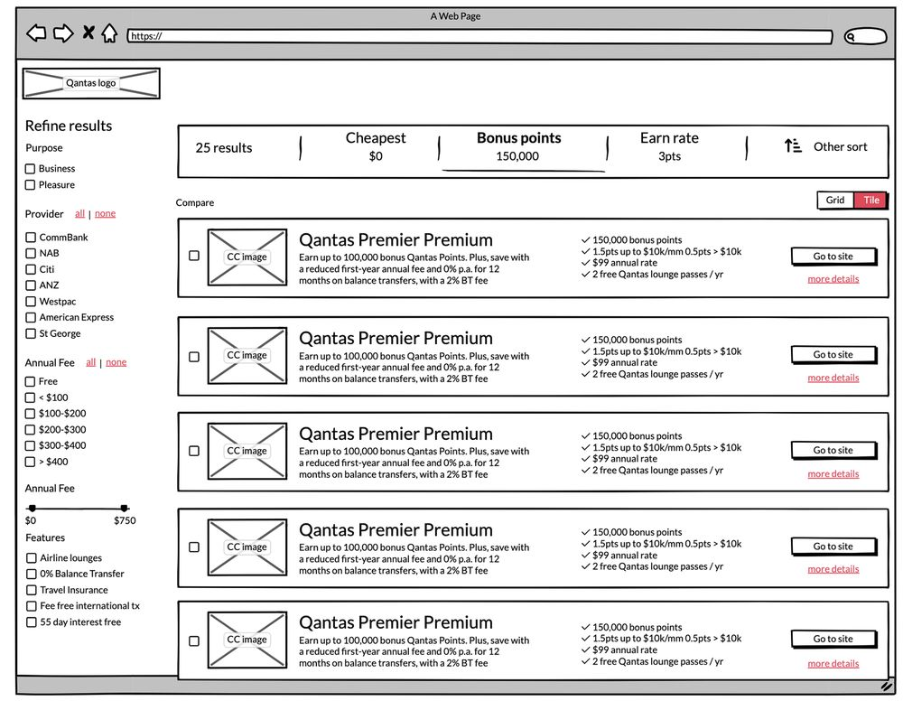
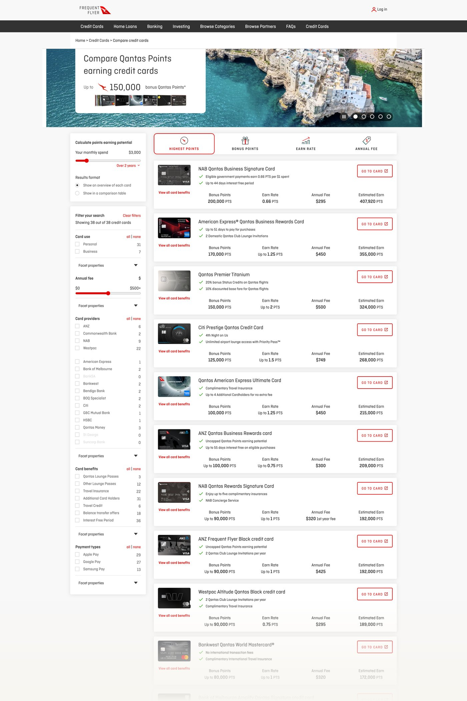
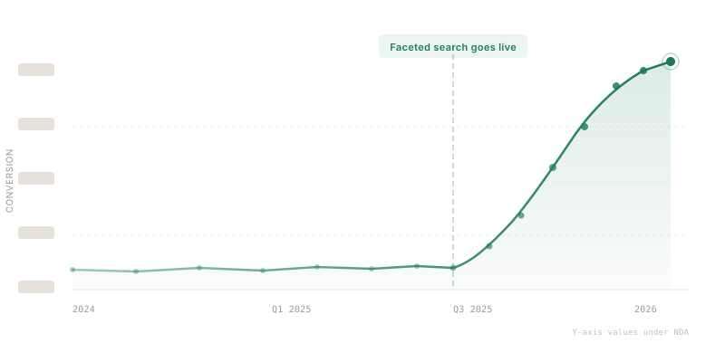

The golden goose goes platinum.
39 cards. 23 providers. One decision.
After being very reluctantly let go — alongside 20,000 others — in the early days of COVID, my manager Cheb made me a promise: “I’ll keep asking you to come back until you say yes.” Four years and several conversations later, I finally said yes — in October 2024.
The brief was specific: run my CRO experimentation playbook on the flagship page for the business — the Credit Card Selector. This is the page where customers browse, research, and ultimately apply for one of 39 different credit cards from 23 different providers that earn Qantas Frequent Flyer points.
To put the stakes in perspective: over 35% of all Australian consumer credit card transactions are on Qantas Points-earning cards. 18.3 million Frequent Flyer members. This page is the front door to a very large part of the business.
All credit cards are not created equal, and there’s a mental calculation to be done on the value derived from each of them based on your circumstances. As soon as I arrived I identified significant interaction design challenges, and in my first week I proposed that alongside a cadence of quick-win experiments, I would also investigate a north star — a fundamentally better way to solve what I call the ‘million to one’ problem.
This wasn’t new territory. I was responsible for exactly this at Thomson Reuters a decade earlier — their flagship legal research tool Westlaw AU. Getting from a long list to a manageable short list to the thing you’re after, with the least friction possible. Legal precedents or low-fee credit cards — same mental model.
Quick wins while building the case
I hit the ground running identifying key areas to optimise: filtering, sorting, de-clutter, microcopy, interface uplift, and education. These were workshopped with stakeholders and prioritised through DVF.
The lead experiment targeted two hypotheses. First, the three CTAs were squeezed together and felt like part of the same action — de-clutter. Second, the word ‘apply’ creates click fear because users aren’t actually applying, they’re being transferred to the partner website — microcopy.

Click-bait is not conversion
Using Optimizely, we tested a range of CTAs from the control ‘Apply’ (most click-fear) through to ‘View offer’ (most click-bait). The results were compelling but nuanced — the 106.73% uplift on ‘View offer’ was actually click-bait, not genuine intent. Users arrived at the partner site, realised there wasn’t an ‘offer’ as such, and left.
The winning variant was ‘Go to partner’ — the ‘Goldilocks’ moment that didn’t create fear or bait. We validated this with actual conversion-per-variation data, not just click-through. We then iterated by separating the compare action and relocating ‘more features’ to a more logical position under the feature bullet points — producing further significant double-digit improvements.

We could change microcopy and layout of tiles all day. But what was fundamentally broken was the ‘million to one’ problem — how do you get from 39 cards down to a manageable number to compare, and then make your choice?
Faceted search — the ubiquitous pattern
The existing sort and filter was broken. The zone that contained it didn’t make it clear which was a sort, which was a filter, and which affected estimated points earning. We were making the user think — hard.

I did a ‘looking out’ exercise — desktop research on marketplace competitors and how they solve this globally. Confirming what I already knew, there was a ubiquitous pattern across all ‘million to one’ searches: filtering on the left sidebar, sorting as a header, products below in a single vertical tile stack. This pattern has a name — faceted search. It lets the customer choose their own adventure, filtering and sorting in real time until they reach a manageable shortlist.

The golden goose doesn’t change on a hunch
Credit Card Selector was the golden goose, and any changes to how it worked were significant. We needed to prove beyond all reasonable doubt that this would be a must-win. I put together an exhaustive initiative brief highlighting the opportunities of following a ubiquitous pattern — backed by independent research.
Source: Baymard Institute
Source: Baymard Institute
Source: Econsultancy
The goal was clear: increase time on site through more interaction and immersion with the cards and their features. This would inevitably mean more conversions. But the attribution challenge was real — once users leave CCS, they’re on the partner website, and there’s only a 30% chance of linking the two sessions, especially if they’re not logged in.
Designed it. Built it. Tested it.
I built a fully working, interactive HTML prototype using the same production JSON data for the credit cards. Not a Figma click-through — a real, working application that participants could interact with as if it was the new production website. I’ve been working with the open-source Westpac GEL framework since its inception, having been there at the start, and over ten years I’ve fine-tuned it into an exceptional prototyping tool — styled here in full Qantas livery.
That is why I am at my best when given a data-driven design challenge. I didn’t propose faceted search and wait for a dev team to tell me why it couldn’t be done — I built it myself, with real data, in a fraction of the time, to validate the problem to be solved.
The prototype included a feature I called ‘visual sort’ — inspired by Kayak’s ‘Best, Cheapest, Quickest’ pattern, where users can see the trade-offs at a glance rather than mentally parsing a table. I was a massive proponent of it, but I could read the room — stakeholders weren’t buying the departure from the existing table-based sort. So I compromised. Knowing when to push and when to land the bigger win is part of the job.


Testing with real people, not assumptions
Moderated through the Askable platform, the testing thoroughly validated the problem and the proposed solution. The faceted search pattern aligned with users’ existing mental models from other marketplace experiences — they didn’t need to learn anything new.
That device-switching insight identified a gap: there was no way to move from one device to the other frictionlessly. This was prioritised as a backlog feature. We also used Dovetail AI to analyse the research findings, cutting synthesis time from days to hours.
Hockey-stick growth
Validated hypothesis. Detailed design. Full product plan. Convincing the execs it would have no unintended consequences. The faceted search went live towards end of 2025. Although hard numbers are under NDA, the uptick was significant — a hockey-stick graph that continues to climb.

The timing couldn’t have been better. The RBA’s recent decision on credit card surcharges means that if surcharges are banned or reduced, the value proposition of points-earning cards shifts — more consumers will be comparing cards on features and fees rather than defaulting to whatever their bank offers. The Credit Card Selector becomes even more critical as the primary decision-making tool.
Awarded the crown jewels
As soon as this project completed, I was given the 'crown jewels' - leading design on the biggest changes to the Qantas Loyalty program in its 40-year history, re-imagining the My Account and Activity Statement pages that every single QFF member uses to track their progress within the program.
Pattern recognition across domains
The ‘million to one’ problem isn’t unique to credit cards. I solved the same pattern for legal research at Thomson Reuters a decade earlier. This case study shows what thirty years of cross-domain experience looks like in practice: recognising the pattern, knowing the solution exists, building the evidence, and then building the thing — not handing it off, but actually building it. The prototype wasn’t a deliverable to be implemented. It was the proof.